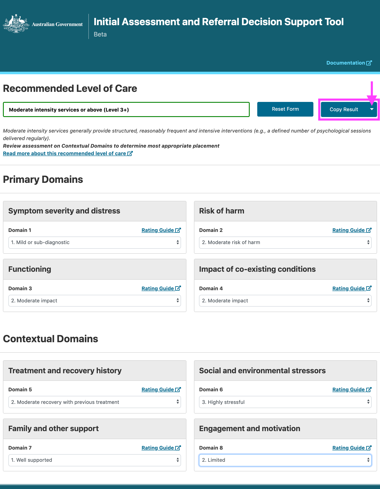
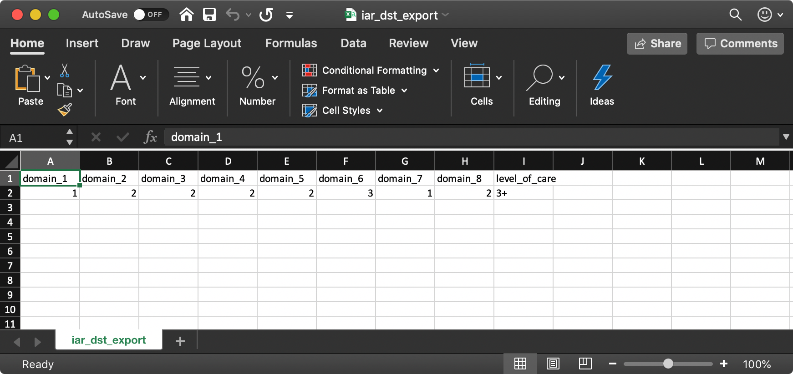
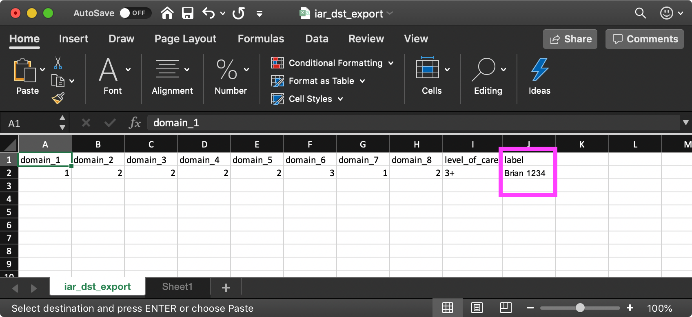
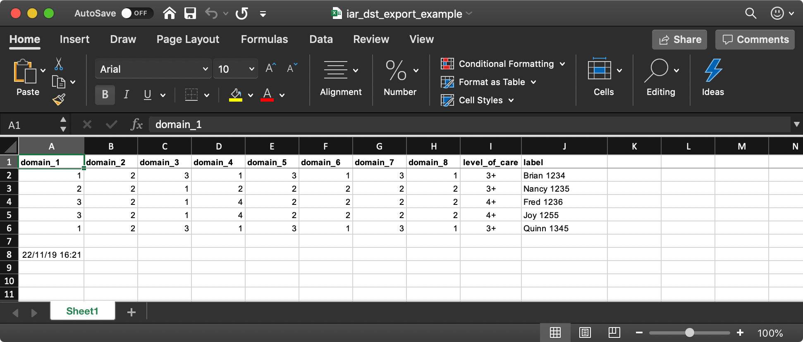

Saving your results¶
Step 1¶
Once you have provided a response for each of the 8 domains, you will see that the Copy Result button is now active.
{kind=link}
Clicking the arrow to the right of the Copy Result text will provide you with the option to download your results.

Step 2¶
You have now downloaded your first set of results as a .csv file. The filename will be iar_dst_export.csv. (do we need to tell them where to find the file? like “depending on your browsers settings, your file will most likely be in your computers’ ‘downloads’ folder”)
Open your file using a program such as Microsoft Excel or Numbers.
*Example of file when opened with Excel
Step 3¶
Add in an identifier column to the end of what will become your master spreadsheet. In our example we have used label and populated it with the patients client number.
- Example of including an identifier column
Step 4¶
Subsequent rows can be added by downloading your next set of results using Copy Result again. You can then open the new result .csv file and copy and paste the new results into your master spreadsheet.
- Example of layout for master spreadsheet
Example Spreadsheet¶
You can download our example spreadsheet to use as a guide for saving your responses